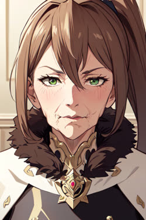
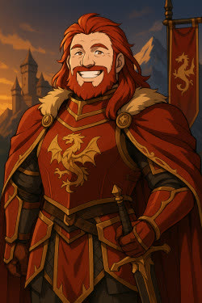

Unter dem Zeichen des Golddrachen
Eine Krone, zwei Wurzeln
Aus dem Bündnis der geflohenen Avallornier und der einheimischen Crannath-Alben entstand Cenyr. Ritterlichkeit, Ehre und Tugend prägen sein Königtum. Seine Herrscher und Ritter trugen den Ehrenkodex weit über die Grenzen des Reiches hinaus.
- Regierungsform
- Erbmonarchie
- Dynastie
- Haus Pendrag
- Hauptstadt
- Mathragon
- Erbrecht
- Primogenitur
- Lehnsautorität
- Sehr hoch
- Glaube
- Alerische Kirche
Die überlieferte Herrscherfolge
Die Könige Cenyrs
Wähle einen König, um ihn im Stammbaum des Hauses Pendrag zu öffnen und seine familiären Verbindungen zu erkunden.
Die frühe Chronik ist lückenhaft. Die markierten Zeitsprünge bezeichnen nicht überlieferte Abschnitte; aufeinanderfolgende Einträge bilden daher keine lückenlose Thronfolge ab. Unbekannte Regierungszeiten bleiben offen.
-
Haus Pendrag · König von Cenyr
Vortigern I.
Erster König Cenyrs · Gründer des Reiches
RegentschaftNicht überliefertIm Stammbaum -
Haus Pendrag · König von Cenyr
Uther I.
Zweiter König Cenyrs
RegentschaftNicht überliefertIm Stammbaum - Jahrhunderte später
-
Haus Pendrag · König von Cenyr
Parzifal I.
RegentschaftNicht überliefertIm Stammbaum - Später · Überlieferungslücke
-
Haus Pendrag · König von Cenyr
Malon II.
RegentschaftNicht überliefertIm Stammbaum -
Haus Pendrag · König von Cenyr
Melwas III.
RegentschaftNicht überliefertIm Stammbaum - Später · Überlieferungslücke
-
Haus Pendrag · König von Cenyr
Griflet II.
RegentschaftNicht überliefertIm Stammbaum - Später · Überlieferungslücke
-
Haus Pendrag · König von Cenyr
Galahad III.
RegentschaftBeginn unbekannt – 1149Im Stammbaum - Später · Überlieferungslücke
-
Haus Pendrag · König von Cenyr
Agravaine V.
Regentschaft1568 – 1600Im Stammbaum -
Haus Pendrag · König von Cenyr
Gawain VII.
Regentschaft1600 – 1623Im Stammbaum -
Haus Pendrag · König von Cenyr
Gareth IV.
Regentschaft1623 – 1634Im Stammbaum -
Haus Pendrag · König von Cenyr
Bors II.
Regentschaft1634 – 1653Im Stammbaum -

Haus Pendrag · König von Cenyr
Artus XII.
Regentschaft1653 – 1673Im Stammbaum -
Haus Pendrag · König von Cenyr
Uther IX.
Regentschaft1673 – 1678Im Stammbaum -
Haus Pendrag · König von Cenyr
Rywalyn II.
Regentschaft1678 – 1720Im Stammbaum -

Die gegenwärtige Krone
Tristan
Amtierender König von Cenyr
RegentschaftSeit 1720Im Stammbaum
Flucht, Bündnis & Gründung
Der Ursprung des Reiches
Die Avallornier lebten einst im reichen westlichen Reich Avallorn. Als ihre Heimat unterging, flohen die Überlebenden über das Meer an die Küsten der heutigen Westlande. Dort trafen sie auf die Crannath-Alben, die bereits gegen die einfallenden Norrnaigh kämpften.
Auf der Suche nach einer neuen Heimat schlossen die Avallornier ein Bündnis mit den Crannath. Gemeinsam vertrieben sie die Nordmänner. Ihr Sieg verband die Naturverbundenheit und Weisheit der Crannath mit dem militärischen Geschick und den ritterlichen Idealen der Avallornier.
Unter Vortigern Pendrag, dem ersten König Cenyrs, wuchsen die beiden Völker zu den Cenyri zusammen. Über die Jahrhunderte wurde das Reich zu einem Zentrum des Rittertums. Äußere Bedrohungen, Rivalitäten im Inneren und die Gefahren seiner Grenzlande stellten es dennoch immer wieder auf die Probe.
Das heutige Cenyr versteht sich als Hüter ritterlicher Ideale, des Glaubens und der Gerechtigkeit. Seine Grafschaften, Küstenregionen und Berglande verbinden alte Traditionen mit den Anforderungen ihrer jeweiligen Lebensräume. Auf den früheren Glauben an den Alten Pantheon folgte die Alerische Kirche.
Abstammung verpflichtet
Das Recht auf die Krone
Das cenyrische Erbrecht verbindet familiäre Ansprüche mit Lehnstreue und ritterlicher Bewährung. Legitimität, Eignung und die Anerkennung durch Kirche und Vasallen bestimmen, wer ein Erbe antreten kann.
Primogenitur
Grundsätzlich erbt der älteste Sohn Titel, Lehen und die damit verbundenen Rechte. Stirbt er oder wird er für ungeeignet erklärt, fällt das Erbe an den nächstältesten Sohn. Gibt es keinen männlichen Erben, können Töchter berücksichtigt werden; ihre Ansprüche sind häufig mit Heiratsallianzen verbunden.
Lehnstreue & ritterliche Eignung
Adelige Abstammung allein genügt nicht. Ein Erbe soll Tapferkeit, Ehre, Rechtschaffenheit und Glaubenstreue verkörpern. Entspricht er diesen Idealen nicht, kann der Lehnsherr oder König ihn für untauglich erklären und stattdessen einen anderen männlichen Verwandten oder einen verdienstvollen Ritter einsetzen.
Bewährung in der Knappschaft
Die Söhne des Adels und gelegentlich auch seine Töchter erlernen die ritterlichen Tugenden als Knappen. Ein Erbe muss sich in dieser Ausbildung bewähren und häufig den Ritterschlag empfangen, bevor er seinen Anspruch antreten kann. Versagen oder Entehrung können zum Verlust dieses Anspruchs führen.
Ehrenvolle Adoption
Ist ein Herrscher kinderlos oder erscheinen seine direkten Nachkommen ungeeignet, kann in seltenen Fällen ein würdiger Ritter oder naher Verwandter ehrenvoll adoptiert werden. Die Adoption ist rechtlich bindend und wird in einer feierlichen Zeremonie von Kirche und Vasallen bestätigt.
Der Einfluss der Kirche
Die Alerische Kirche wacht darüber, dass die Erbfolge sowohl weltlichen Gesetzen als auch den göttlichen Tugenden entspricht. Ketzerei, Tyrannei oder schwere Untugend können zur Exkommunikation und zur Enthebung vom Erbe führen. Solche Urteile sind selten, können aber erhebliche Konflikte auslösen.
Töchter & dynastische Allianzen
Töchter stehen in der Erbfolge hinter männlichen Erben, sind aber für dynastische Bündnisse von großer Bedeutung. Durch Heiratsallianzen können ihnen Ansprüche auf Ländereien und Titel zukommen, insbesondere wenn anderweitige Nachkommen fehlen. In solchen Fällen wird ihr Ehemann als Vormund und Beschützer der Ländereien eingesetzt.
Turniere bei umstrittener Erbfolge
Erheben mehrere Anwärter Anspruch auf ein Lehen, können sie in einem ritterlichen Turnier oder Duell um das Erbrecht kämpfen. Kirche und Vasallen beaufsichtigen den Wettstreit. Er soll den würdigsten und ehrenhaftesten Anwärter bestimmen und größere Blutvergießen oder Bürgerkriege verhindern.
Glaube & Königswürde · Das Schwert im Stein
Nimues Versprechen
Der Legende nach kehrt das Schwert der Könige an eine verborgene heilige Stätte zurück und ruht dort im Stein, wenn die königliche Linie erlischt oder kein geeigneter Erbe bleibt.
Wer es herausziehen kann, gilt als von Nimue, der Dame des Sees, erwählt und als rechtmäßiger König Cenyrs. Diese göttliche Prüfung soll die Krone einem würdigen, tugendhaften und starken Menschen anvertrauen.
Die Überlieferung schenkt dem Volk in Krisenzeiten Hoffnung. Sie erinnert daran, dass Herrschaft in Cenyr mit Tugend, göttlicher Bestimmung und einer Führung im Einklang mit den Göttern verbunden sein soll.